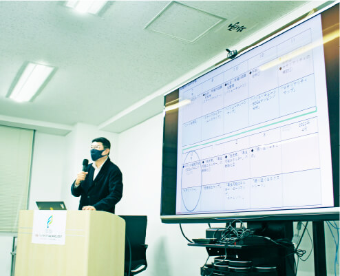
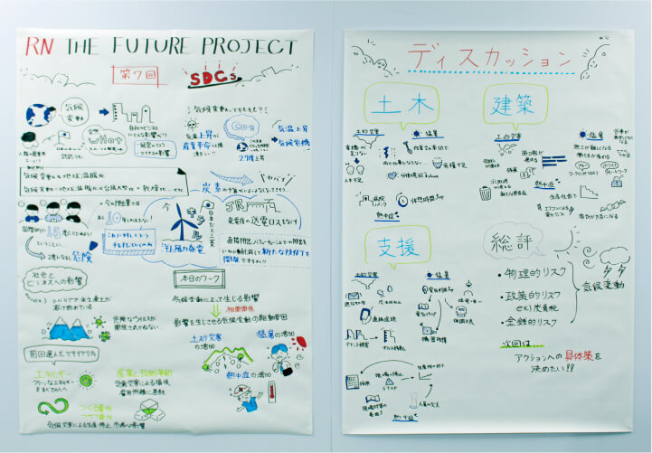

RN THE FUTURE PROJECT
SDGs勉強会
学びを通じて、
社会とりんかい日産建設の「未来」を考える
りんかい日産建設はサステナビリティ経営における重要な取り組みの一つとして、 2021年7月より各部門の社員が参加する「SDGs勉強会」を定期的に開催しています。
目的
未来に向けての、知識の習得と自分ごと化
当社がこれまでどのように社会に役立ってきたか、そして未来に向けてどう行動すべきか、どうすれば持続可能な社会の実現に貢献できるのかを、社員一人ひとりが「自分ごと」として考え取り組めるようになることを目指しています。
形式
セミナー＆ワークショップ形式
勉強会は、毎月1回のペースで開催。SDGsやCSR・ESGなどに関する国内外の最新情報と他社事例を学ぶ「セミナー」、得た知識を活用してグループで議論・考察し発表を行う「ワークショップ」の2部構成になっています。
講師
岸 和幸先生
キシエンジニアリング株式会社 代表取締役東京都市大学・教育開発機構
「ひらめき・こと・もの・ひと」づくりプログラム
特任教授
「サステナビリティ対談」で当社代表取締役社長・前田祐治と対談した岸和幸先生に講師を依頼しています。
※岸先生のプロフィールはこちら
カリキュラム
テーマごとに、
毎回3ステップで学習
1

知識を得る
講師の岸先生が毎回一つのテーマを取り上げ、さまざまなデータや最新情報を教材とした講義を行います。
2

チームで考える
講義内容を参考に、参加者が土木・建築・支援の部門ごとに3つのチームに分かれて考察や議論を展開。チーム全体の意見をまとめます。
3

発表する／気づきを得る
各チームのリーダーがまとめた意見を発表。参加者全員でその内容を共有します。「部門が異なれば取り組み内容も異なる」といった、新たな気づきも得られます。
| 実施時期 | 回 | 講義内容 | ワークショップ内容 | 参加人数（職種別人数） | |
|---|---|---|---|---|---|
| 2021年 | 7月 | 第1回 | ゴール設定＆バックキャスト | 「ゴール目標図」作成 | 11名（土木技術職4名、 建築技術職1名、事務職6名） |
| 8月 | 第2回 | 社会・市場の認識＆整理 （ステークホルダー） |
「ステークホルダー・ニーズマップ」 作成 |
16名（土木技術職4名、 建築技術職6名、事務職6名） |
|
| 10月 | 第3回 | 社会・市場の認識＆整理 （バリューチェーン） |
「バリューチェーンマップ」作成 | 13名（土木技術職4名、 建築技術職3名、事務職6名） |
|
| 10月 | 第4回 | 外部・内部環境の分析① | 「バリューチェーン・ SDGsマッピング分析」作成 |
20名（土木技術職4名、建築技術職4名、 事務職5名）＋リモート参加7名 |
|
| 11月 | 第5回 | 外部・内部環境の分析②／ マテリアリティの検討 |
「マテリアリティマップ」作成 | 17名（土木技術職４名、建築技術職2名、 環境・再生エネルギー部1名、 事務職７名）＋リモート参加3名 |
|
| 12月 | 第6回 | KPIの設定方法 （SDGsのモニタリング） |
「KPIツリー」作成 | 18名（土木技術職４名、建築技術職4名、 事務職6名）＋リモート参加4名 （北海道支店、大阪支店、九州支店） |
|
| 2022年 | 1月 | 第7回 | 脱炭素・再生可能エネルギーの 戦略化①（経営リスク） |
「ビジネス・炭素リスクマップ」作成 | 19名（土木技術職5名、建築技術職4名、 事務職7名）＋リモート参加3名 （北海道支店、大阪支店） |
| 2月 | 第8回 | 脱炭素・再生可能エネルギーの 戦略化②（取り組み） |
「ビジネス・脱炭素マップ」作成 | 17名（土木技術職5名、建築技術職3名、 ・事務職5名）＋リモート参加3名 （大阪支店、九州支店） |
|
※2022年3月以降も継続予定です。

グラフィックレコーディングで
「見える化」
内容をイラストや手書き文字で分かりやすくリアルタイムに記録する「グラフィックレコーディング」を、第1回より実施。完成したシートは未参加社員への情報共有や社内浸透に利用しています。

リモート開催で
遠隔地メンバーも参加
第4回からリモート同時開催も実施。各支店の社員も気軽に参加できるようにしました。回を重ねるごとに撮影方法や情報共有方法に関する技術が向上。より一体感の高い勉強会になっています。